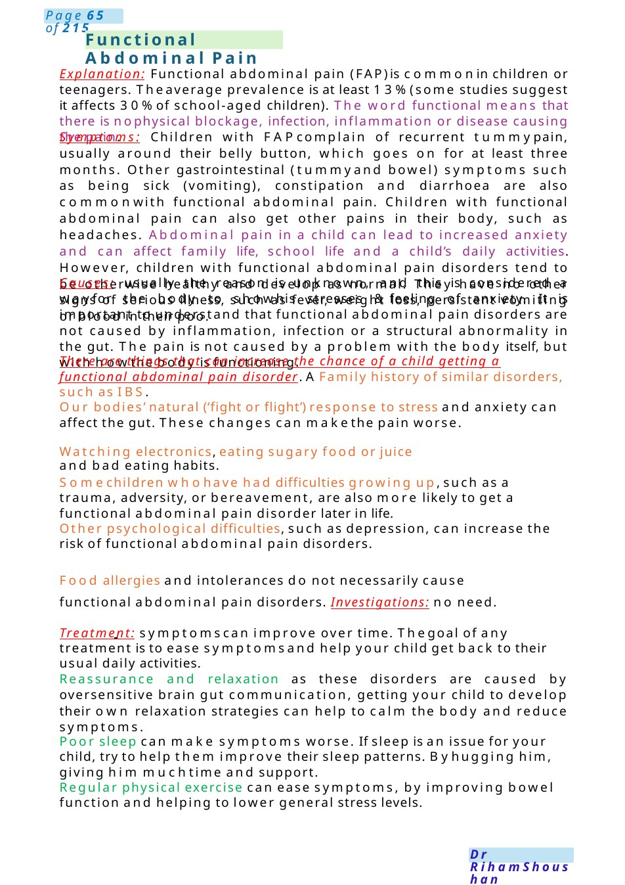

Functional Abdominal Pain
Explanation: Functional abdominal pain (FAP)is commonin children or teenagers. Theaverage prevalence is at least 13%(some studies suggest it affects 30%of school-aged children). The word functional means that there is nophysical blockage, infection, inflammation or disease causing the pain. Symptoms: Children with FAPcomplain of recurrent tummypain, usually around their belly button, which goes on for at least three months. Other gastrointestinal (tummyand bowel) symptoms such as being sick (vomiting), constipation and diarrhoea are also commonwith functional abdominal pain. Children with functional abdominal pai…
Scenario Summary
Explanation: Functional abdominal pain (FAP)is commonin children or teenagers. Theaverage prevalence is at least 13%(some studies suggest it affects 30%of school-aged children). The word functional means that there is nophysical blockage, infection, inflammation or disease causing the pain. Symptoms: Children with FAPcomplain of recurrent tummypain, usually around their belly button, which goes on for at least three months. Other gastrointestinal (tummyand bowel) symptoms such as being sick (vomiting), constipation and diarrhoea are also commonwith functional abdominal pain. Children with functional abdominal pai…
Full Original Scenario

Functional Abdominal Pain
Explanation: Functional abdominal pain (FAP)is commonin children or teenagers. Theaverage prevalence is at least 13%(some studies suggest it affects 30%of school-aged children). The word functional means that there is nophysical blockage, infection, inflammation or disease causing the pain.
Symptoms: Children with FAPcomplain of recurrent tummypain, usually around their belly button, which goes on for at least three months. Other gastrointestinal (tummyand bowel) symptoms such as being sick (vomiting), constipation and diarrhoea are also commonwith functional abdominal pain. Children with functional abdominal pain can also get other pains in their body, such as headaches. Abdominal pain in a child can lead to increased anxiety and can affect family life, school life and a child’s daily activities. However, children with functional abdominal pain disorders tend to be otherwise healthy and develop as normal. They have no other signs of serious illness, such as fever, weight loss, persistent vomiting or blood in their poo.
Causes: usually the reason is unknown, and this is considered a wayfor the body to showhis stresses &feeling of anxiety. It is important to understand that functional abdominal pain disorders are not caused by inflammation, infection or a structural abnormality in the gut. The pain is not caused by a problem with the body itself, but with howthe body is functioning.
There are things that can increase the chance of a child getting a functional abdominal pain disorder. AFamily history of similar disorders, such as IBS.
Our bodies’ natural (‘fight or flight’) response to stress and anxiety can affect the gut. These changes can makethe pain worse.
Watching electronics, eating sugary food or juice and bad eating habits.
Somechildren whohave had difficulties growing up, such as a trauma, adversity, or bereavement, are also more likely to get a functional abdominal pain disorder later in life.
Other psychological difficulties, such as depression, can increase the risk of functional abdominal pain disorders.
Food allergies and intolerances do not necessarily cause functional abdominal pain disorders. Investigations: no need.
Treatment: symptomscan improve over time. Thegoal of any treatment is to ease symptomsand help your child get back to their usual daily activities.
Reassurance and relaxation as these disorders are caused by oversensitive brain gut communication, getting your child to develop their own relaxation strategies can help to calm the body and reduce symptoms.
Poor sleep can make symptoms worse. If sleep is an issue for your child, try to help them improve their sleep patterns. Byhugging him, giving him muchtime and support.
Regular physical exercise can ease symptoms, by improving bowel function and helping to lower general stress levels.

Functional Constipation
Growing Pain
Manage his stresses, it is important to find anything that might be causing stress for your child and help them to overcome these. Common examples of stress in children include exams, general performance, or bullying at school, friendships, family worries or changes in homelife, appearance, illness in the family. Talk with your child and help them to come up with strategies to manage any worries that they have. You might need the support of your child’s school to manage any bullying or academic stress they are experiencing
Diet, change his dietary habit for healthier lifestyle choices and even involve dietitian.
Team: dietitian, psychologist if needed for the family &child support. Laise with school.
Either constipation or functional constipation to mother or medical student
Definition: Infrequent bowel evacuation of hard faeces or difficult/painful defecation for ≥1 month. If mother (draw the colon and describe that normally the food passing through the gut tubes smoothly by the help of the muscle contractions to push the stool outside, in some kids they ignore the urge to go to bathroom, do not drink enough fluids or eat a balanced diet which make the stool to be hard and difficult to be pushed outside).
Causes: Either functional, which is 90 %of cases, other organic causes like hypothyroidism, hypokalaemia, hypomagnesemia, Hirschsprung disease, celiac, neurogenic causes or anatomical abnormalities.
Investigations: Usually, noneed for investigations unless in somecases: thyroid function tests, coeliac panel, If delayed passage of meconium: sweat test.
Management: lifestyle modification, dietary management (increase fibres, fluids, fruits) increase activity, behaviour changes with regular toilet after meals for 5 minutes with correction of position on the toilet with leaning forward &put the feet on the floor. give the child rewards. Dis impaction with Movicol oral gradually increase the Sach till the maximum then give the have amount and continue for 4_ 6 maintenances with aim to maintain loose soft stool daily.
Team: dietician, gastroenterologist.
Definition: Growing pains are aches, usually in the legs, which are common in children. It is not known what causes growing pains but, despite the name, they are not due to growing. They are not serious and considered as a one cause of recurring discomfort in children.
Thepains usually occur in the evening or night which can be bad enough to wakea child in the night. Usually growing pains occur in the legs, particularly: In the calves. In the shins. Around the ankles. At the front of the thighs. usually affect both legs &felt in the areas between the joints, rather than in the joints themselves. usually cause an aching or throbbing feeling in the legs.
What causes growing pain: Unknown, are more common in active children who play sport. It is possible the pains are because of lots of activity on muscles and bones.